Целью данной работы является приобретение практических навыков по конфигурированию SMTP-сервера в части настройки аутентификации.
На виртуальной машине server войдём под нашим пользователем и откроем терминал. Перейдём в режим суперпользователя (рис. @fig-1):
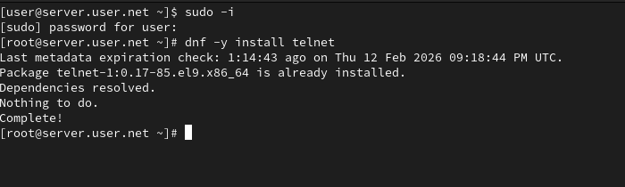
В дополнительном терминале запустим мониторинг работы почтовой службы (рис. @fig-2):
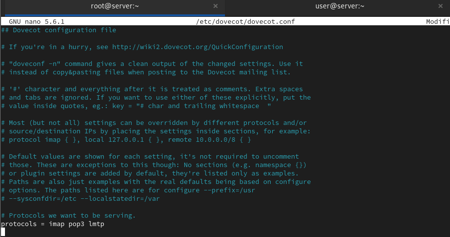
Добавим в список протоколов, с которыми может работать Dovecot, протокол LMTP (рис. @fig-3):
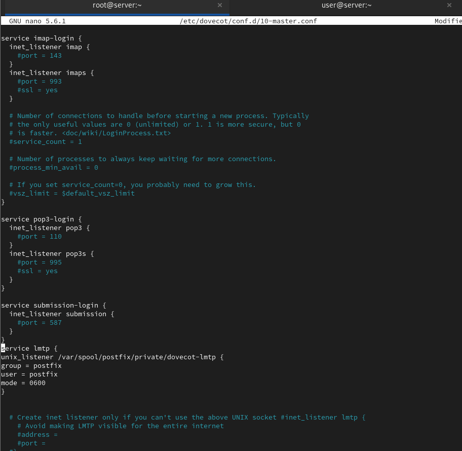
Настроим в Dovecot сервис lmtp для связи с Postfix, определив расположение unix-сокета и права доступа (рис. @fig-4):
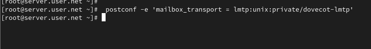
Переопределим в Postfix передачу сообщений через заданный unix-сокет (рис. @fig-5):
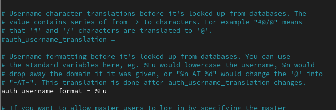
В файле /etc/dovecot/conf.d/10-auth.conf зададим формат имени пользователя для аутентификации в форме логина без указания домена (рис. @fig-6):
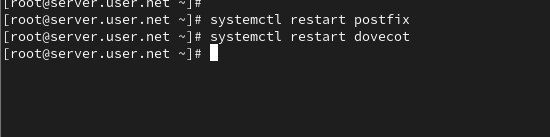
Перезапустим Postfix и Dovecot для применения изменений (рис. @fig-7):
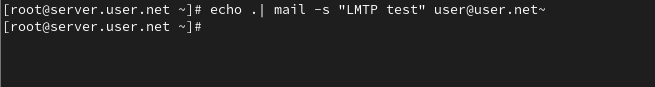
Из-под учётной записи своего пользователя отправим письмо с клиента (рис. @fig-8):
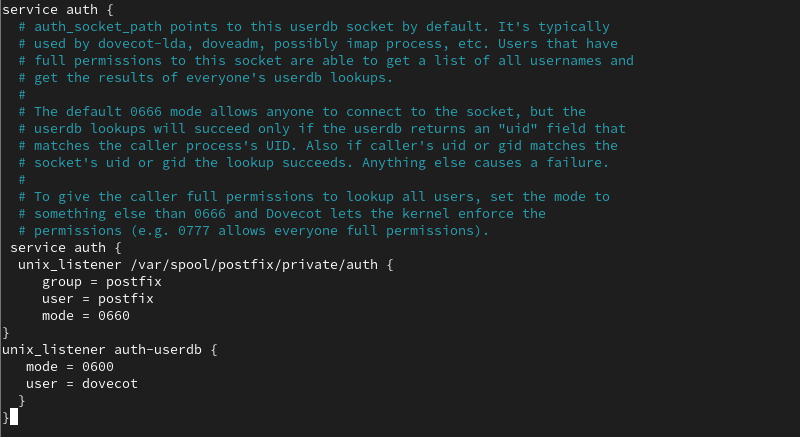
Посмотрим содержание логов при мониторинге почтовой службы и проверим почтовый ящик пользователя на сервере (рис. @fig-9, @fig-10):
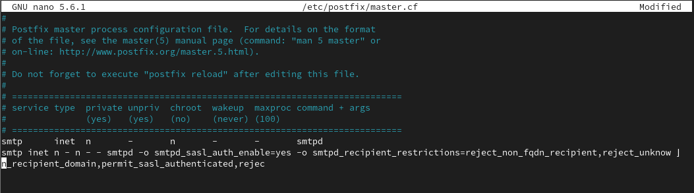
Определим службу аутентификации пользователей в Dovecot и настроим Postfix для использования SASL-аутентификации (рис. @fig-11):
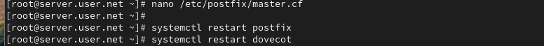
Для проверки работы аутентификации временно запустим SMTP-сервер с возможностью аутентификации (рис. @fig-12):
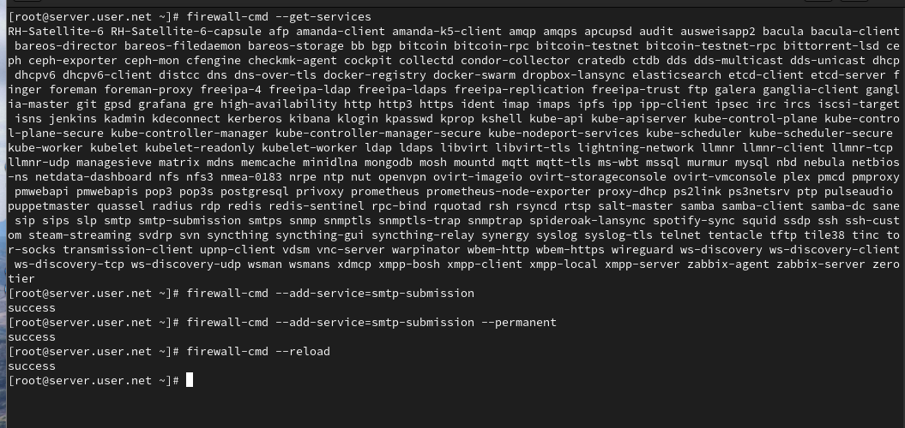
На клиенте установим telnet, получим строку для аутентификации и протестируем подключение к SMTP-серверу (рис. @fig-13):
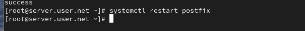
Настроим SMTP-сервер на 587-м порту, разрешим соответствующую службу в межсетевом экране и перезапустим Postfix (рис. @fig-14):
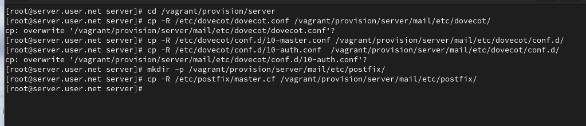
В ходе выполнения лабораторной работы были приобретены практические навыки по конфигурированию SMTP-сервера в части настройки аутентификации.